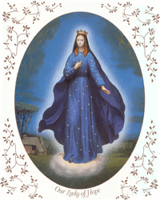
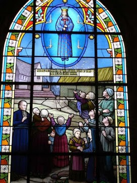
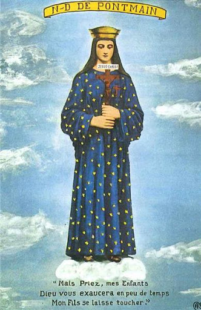
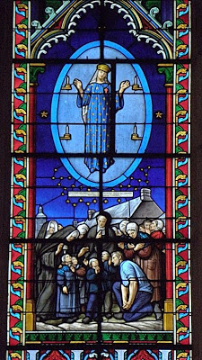
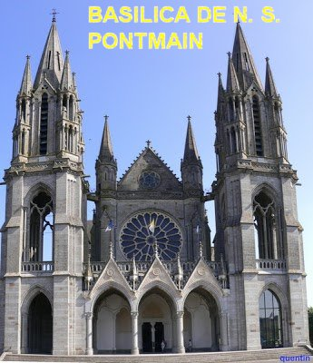
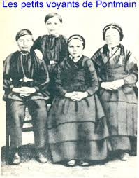

“REVELAÇÕES DA APARIÇÃO”
COMEÇARAM AS ORAÇÕES

Com a chegada do Pároco, as orações pararam momentaneamente, para organização do ambiente. Algumas pessoas deram a idéia de testar as crianças para saber se falavam a verdade. Sem dúvida, a descrição de “NOSSA SENHORA” feita pelas crianças foi exatamente igual, então não havia motivo para separá-las. As demais pessoas e os adultos, só viam as três estrelas brilhantes que limitavam a área onde estava “NOSSA SENHORA”. Nesse momento apareceu um amplo oval azul ao redor de “NOSSA SENHORA”, como se fosse um fundo azul de um grande quadro. No interior do grande oval, estavam afixadas quatro bobeches (arandelas) com quatro velas apagadas. Ao mesmo tempo, uma pequena cruz vermelha surgiu no vestido da “VIRGEM MARIA”, bem em cima do coração.
Os palpiteiros continuando a interferir, houve pequenas discussões.“NOSSA SENHORA” não gostou e parou de sorrir, assumindo uma fisionomia triste. O vidente Eugene viu e falou: “Ela caiu em tristeza”. O Pároco cortou as conversas e ordenou: “Vamos Rezar”. A Irmã Marie-Edouard começou o Rosário. Imediatamente, a “SENHORA DA VISÃO” sorriu novamente, mostrando alegria em Seu Rosto. E assim, a Aparição permaneceu durante três horas, e aconteceram muitas manifestações de carinho.

Depois do Rosário, todos cantaram o “Magnificat”. Logo no início da música, as crianças videntes exclamaram: (Agora está acontecendo outra coisa): “Uma tela grande e branca apareceu na base do oval azul, onde está a VIRGEM MARIA.”
Logo em seguida, começaram a surgir letras grandes e douradas nesta tela grande, e formou a primeira palavra “MAS”, e parou. Nesse momento chegou Joseph Babin, um carroceiro que voltava de Ernée, a 20km de distância de Pontmain, e gritou para a multidão: "Vocês devem rezar bastante, com muita fé, pois os prussianos estão se aproximando de Laval." A Mensagem na tela continuou a ser escrita, letra por letra grande e dourada. No final da Ladainha que foi rezada após o canto do “Magnificat” , a mensagem na tela se completou:
“MAS REZEM MEUS FILHOS, BREVE DEUS ATENDERÁ AS SUAS ORAÇÕES.”
Depois desta mensagem, uma grande esperança encheu o coração de todos, e com velada manifestação de alegria, as pessoas se mantinham contritos nas orações e cantos.
REVELAÇÃO DA APARIÇÃO
"NOSSA SENHORA” se mantinha tranquila logo acima do telhado da casa do senhor Guidecoq. Mas a dona da casa, esposa dele, estava considerando aquele acontecimento como maluquice das crianças, entrou em casa e trancou a porta. Mas, logo depois voltou a sair conduzida por uma forte curiosidade e muito desconfiada, com predominância de real incredulidade. Todavia, durante o cântico das Litanias foi aos poucos ganhando confiança e logo se sentindo impulsionada pela esperança, se lançou de joelhos ao chão e com as mãos unidas chorou e ficou rezando.
Seguindo com as orações e os cantos
das Litanias, eles rezam a
“Inviolata”. No painel as letras recomeçaram
na segunda linha: “MON”
Quando cantamos “Oh! 
Não há ponto final na frase, mas esta segunda linha de frase é sublinhada por uma grande linha dourada do mesmo modo que as letras. A alegria envolveu o povo, que sorria e se multiplicava em comentários. O Pároco Padre Michel Guérin levantando os braços pede silêncio e diz: "Vamos cantar nossa canção preferida: “MARIA – MÃE DA ESPERANÇA"; e logo as palavras subiram alegremente ao Céu.
Depois algumas pessoas comentaram: “Quando no domingo passado cantamos essa musica, estávamos com a garganta apertada, por causa de nossos receios em relação à guerra”.
“MÃE DA ESPERANÇA”, cujo nome é tão doce, proteja nossa França, SENHORA reze por nós.
A “SANTÍSSIMA VIRGEM MARIA”, sorria mais do que nunca com o mais belo sorriso que pudemos contemplar durante a Aparição (escreveu depois Joseph Barbedette). “NOSSA SENHORA” para estimular todos a participarem das musicas e orações, elevou por duas vezes as mãos à altura dos ombros, estimulando todos a cantar. O braço esquerdo assim elevado não escondia a pequena cruz vermelha que se encontrava sobre o SEU coração.
- "OLHA, ELA ESTÁ RINDO", gritam as crianças.
“NOSSA SENHORA” levanta os braços uma terceira vez no ritmo do hino. A alegria é geral e todos se entusiasmam. No final do cântico, um rolo "na cor do céu escuro da noite" passou e apagou a mensagem na tela.
O HINO SEGUINTE LEVOU TRISTEZA
A multidão alegre e entusiasmada, logo começa o hino "Meu doce JESUS" cantando diversas vezes o refrão "Porque SENHOR, nós somos o TEU povo penitente". Entrecortado pelo “PARCE DOMINE” (Poupe SENHOR o TEU povo)
As crianças felizes até então, de repente ficaram muito tristes. É porque observaram que a “VIRGEM” também ficou triste. ELA não está chorando, mas um tremor no canto dos lábios marcou a intensidade da SUA dor, e as crianças observaram e disseram: "Nunca vimos tanta tristeza no rosto humano". Então uma cruz vermelha e brilhante apareceu diante da “VIRGEM MARIA”. Na cruz estava “JESUS” numa cor vermelho mais escuro. No topo da cruz, está escrito na cor branca: “JESUS CRISTO”.“NOSSA SENHORA”abaixou-se para pegar a cruz e mostrou às crianças, enquanto uma pequena estrela acendeu as quatro velas que estavam nas arandelas dentro do oval azul, e depois esta pequena estrela se colocou acima da cabeça da “SANTÍSSIMA VIRGEM MARIA”. As crianças explicavam tudo minuciosamente ao povo, e a multidão rezava em silêncio e muitos choravam.

A ALEGRIA VOLTOU – A VIRGEM SE DESPEDIUEntão a Irmã Marie-Edouard cantou a “Ave Maris Stella”. O crucifixo vermelho desapareceu e “NOSSA SENHORA” reassumiu a mesma postura do começo. “ELA” sorriu, "é verdade que um sorriso mais sério retornou aos seus lábios, e uma pequena cruz branca apareceu em cada um de seus ombros”. São 20 horas e 30 minutos da noite do dia 17 de Janeiro de 1871.
- "Meus queridos amigos",
disse o Padre Michel Guérin:
"Faremos a oração da noite juntos.Todos devem
ajoelhar onde se encontram; quem está na neve ajoelha na neve, quem está no celeiro se abrigando do frio,
ajoelha no celeiro”. Jeannette Pottier, a velha serva, iniciou a
oração:“Vamos nos colocar na presença de DEUS e
adorá-lo”.
- O Padre Perguntou as crianças: "Vocês ainda vêem”? Elas responderam: "Não, Senhor Cura, tudo desapareceu, está tudo acabado!"
Eram quase 21 horas da noite. Então, todos foram para as suas casas, com o coração em paz. O medo, e aquela desagradável angústia interior, assim como todos os temores, desapareceram completamente.
A MÃO PODEROSA DE DEUS
Os prussianos que iam ocupar Laval naquela noite não conseguiram entrar. Uma força poderosa os conteve. Um mistério que os prussianos ocultaram. Com certeza a “VIRGEM MARIA” os impediu de entrarem. No dia seguinte, os soldados prussianos (os alemães) se retiraram retornando a sua base.
O armistício foi assinado no dia 25 de janeiro terminando todas as operações militares. E os 38 jovens de Pontmain voltaram sãos e salvos para casa.
A Guerra Franco – Prussiana também denominada: Franco – Germânica, terminou no dia 10 de Maio de 1871, com a assinatura do Tratado de Frankfurt. Esta guerra apresentou duas grandes consequências políticas para a Europa: primeiro, porque a vitória representou o último capítulo para a unificação dos diversos Reinos dos alemães: da Confederação da Alemanha do Norte, da qual fazia parte a Prússia, com o Grão Ducado de Baden, com o Reino de Würtemberg e com o Reino da Baviera, formando a única Alemanha; segundo, porque na França, com a queda do Imperador Napoleão III, marcou o fim do sistema monárquico, começando a Republica Francesa.
INVESTIGAÇÃO E RECONHECIMENTO DA APARIÇÃO

No dia 2 de fevereiro de 1872, após as minuciosas investigações do acontecimento e o julgamento canônico, Dom Wicart, bispo de Laval, publicou um mandato no qual declarou:
“Julgamos que a IMACULADA VIRGEM MARIA, MÃE DE DEUS, realmente apareceu no dia 17 de Janeiro de 1871, a Eugene Barbedette, Joseph Barbedette, Françoise Richer e Jeanne-Marie Lebossé no vilarejo de Pontmain. Com toda humildade e obediência submetemos esta decisão ao julgamento supremo da Santa Sé Apostólica, centro de unidade e órgão infalível da verdade em toda a Igreja”.

Dos quatro videntes, foto ao lado, os dois meninos: Eugenio e Joseph entraram no Seminário e se tornaram Sacerdotes; a menina Joana Maria ingressou no Convento e a outra menina Francisca se formou Professora e permaneceu atuando na Escola Paroquial local.